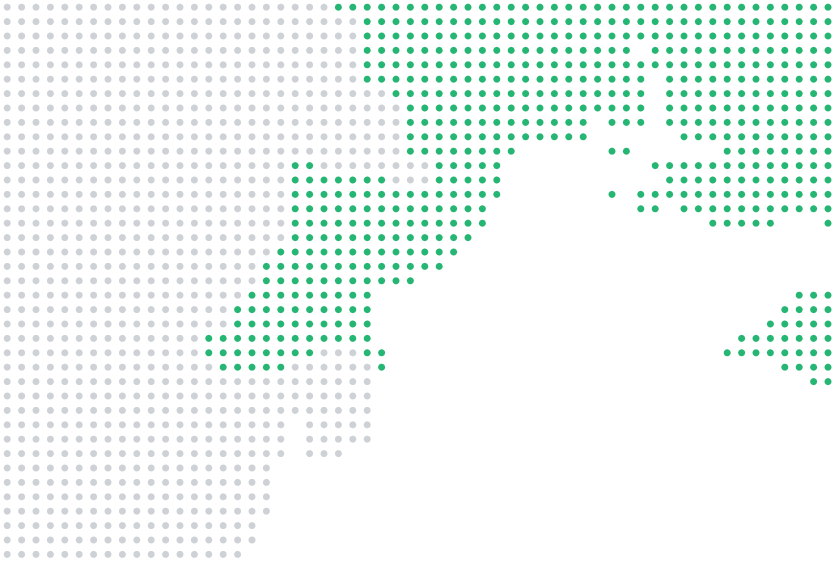

INTERCONTACT
Хто ми
INTERCONTACT — досвід, надійність та ефективні логістичні рішення.
INTERCONTACT — портова логістична компанія, що спеціалізується на перевалці та зберіганні зернових і насипних вантажів, обробці біг-бегів, фасуванні мінеральних добрив, портовому експедируванні та агентуванні суден. Ми забезпечуємо приймання вантажів автомобільним і залізничним транспортом, складську логістику та організацію завантаження суден. Працюємо в ключових портових напрямках України: Чорноморськ, Ізмаїл, Рені та Південний. INTERCONTACT — досвід, надійність та ефективні логістичні рішення.
Про компанію- 2
- морські порти
- 20
- років досвіду
- 70
- чисельність команди


Послуги
Що ми робимо в порту
Ми перевалюємо зерно, мінеральні добрива й генеральні вантажі, фасуємо добрива в біг-беги й зберігаємо вантаж у порту. Займаємося портовим експедируванням і агентуванням суден. А якщо партії потрібні аналізи, фумігація чи незалежний сюрвеєр, це теж можна замовити в нас.
Усі послуги


Процес
Як ми працюємо
- 01
Заявка
Розкажіть про вантаж: що, скільки, у якому порту й коли підходить судно.
- 02
Планування
Розписуємо приймання, зберігання й навантаження чи вивантаження судна за його лейкеном.
- 03
Перевалка
Приймаємо вантаж з автомобілів і вагонів, зберігаємо й вантажимо на судно.
- 04
Документи
Оформлюємо портові й митні документи, а до відходу судна надсилаємо звіт про партію.

Порти
Чорне море та Дунай
В обох портах перевалюємо зерно, добрива й генеральні вантажі.
Про порти
Морські порти
- Чорноморськ
- Ізмаїл
Швидка заявка
Розкажіть про свій вантаж
Ми зателефонуємо або напишемо, уточнимо порт і строки й скажемо, скільки коштуватиме перевалка.